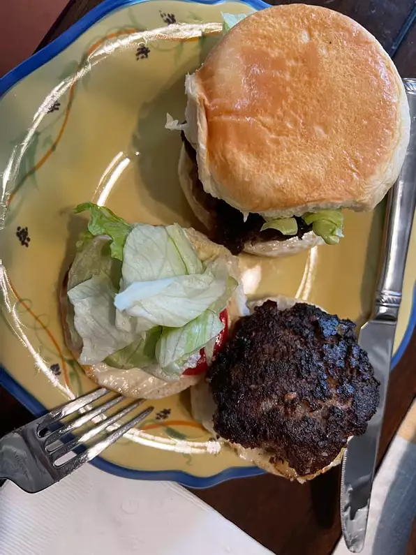

Best Hamburger Ever

description :
The best burger recipe for summertime grilling. This juicy burger is jam-packed with all kinds of stuff and no tasteless bread crumbs! Serve on buns with your favorite condiments.
ingredients :
-
1 ½ pounds lean ground beef .
-
½ onion, finely chopped .
-
½ cup shredded Colby Jack or Cheddar cheese .
-
1 (1 ounce) envelope dry onion soup mix .
-
1 egg
-
1 clove garlic, minced .
-
1 tablespoon garlic powder .
-
1 teaspoon soy sauce .
-
1 teaspoon Worcestershire sauce .
-
1 teaspoon dried parsley .
-
1 teaspoon dried basil .
-
1 teaspoon dried oregano .
-
½ teaspoon crushed dried rosemary .
-
salt and pepper to taste .
steps
- Preheat a grill on high heat.
- Mix together ground beef, onion, cheese, onion soup mix, egg, garlic, garlic powder, soy sauce, Worcestershire sauce, parsley, basil, oregano, rosemary, salt, and pepper in a large bowl. Use your hands to form 4 patties.
- Cook patties on the preheated grill until well-done, about 5 m .